简介
Lombok能以简单的注解形式来简化java代码，提高开发人员的开发效率。例如开发中经常需要写的javabean，都需要花时间去添加相应的getter/setter，也许还要去写构造器、equals等方法，而且需要维护，当属性多时会出现大量的getter/setter方法，这些显得很冗长也没有太多技术含量，一旦修改属性，就容易出现忘记修改对应方法的失误。
Lombok能通过注解的方式，在编译时自动为属性生成构造器、getter/setter、equals、hashcode、toString方法。出现的神奇就是在源码中没有getter和setter方法，但是在编译生成的字节码文件中有getter和setter方法。这样就省去了手动重建这些代码的麻烦，使代码看起来更简洁。
工作原理
会发现在Lombok使用的过程中，只需要添加相应的注解，无需再为此写任何代码。自动生成的代码到底是如何产生的呢？
核心之处就是对于注解的解析上。JDK5引入了注解的同时，也提供了两种解析方式。
运行时解析：
运行时能够解析的注解，必须将@Retention设置为RUNTIME，这样就可以通过反射拿到该注解。java.lang,reflect反射包中提供了一个接口AnnotatedElement，该接口定义了获取注解信息的几个方法，Class、Constructor、Field、Method、Package等都实现了该接口，对反射熟悉的朋友应该都会很熟悉这种解析方式。
编译时解析：
编译时解析有两种机制，分别简单描述下：
1）Annotation Processing Tool
apt自JDK5产生，JDK7已标记为过期，不推荐使用，JDK8中已彻底删除，自JDK6开始，可以使用Pluggable Annotation Processing API来替换它，apt被替换主要有2点原因：
- api都在com.sun.mirror非标准包下
- 没有集成到javac中，需要额外运行
2）Pluggable Annotation Processing API
JSR 269自JDK6加入，作为apt的替代方案，它解决了apt的两个问题，javac在执行的时候会调用实现了该API的程序，这样我们就可以对编译器做一些增强，这时javac执行的过程如下：
Lombok本质上就是一个实现了“JSR 269 API”的程序。在使用javac的过程中，它产生作用的具体流程如下：
- javac对源代码进行分析，生成了一棵抽象语法树（AST）
- 运行过程中调用实现了“JSR 269 API”的Lombok程序
- 此时Lombok就对第一步骤得到的AST进行处理，找到@Data注解所在类对应的语法树（AST），然后修改该语法树（AST），增加getter和setter方法定义的相应树节点
- javac使用修改后的抽象语法树（AST）生成字节码文件，即给class增加新的节点（代码块）
优缺点
优点：
- 能通过注解的形式自动生成构造器、getter/setter、equals等方法，提高了一定开发效率
- 让代码变得简洁，不用过多的去关注相应的方法
- 属性做修改时，也简化了维护为这些属性所生成的getter/setter方法等
缺点：
- 不支持多种参数构造器的重载
- 虽然省去了手动创建getter/setter方法的麻烦，但大大降低了源代码的可读性和完整性
IDEA中的安装
注意：IDEA上必须要支持Lombo插件，否则会报错
打开IDEA的Setting –> 选择Plugins选项 –> 选择Browse repositories –> 搜索lombok –> 点击安装 –> 安装完成重启IDEA –> 安装成功
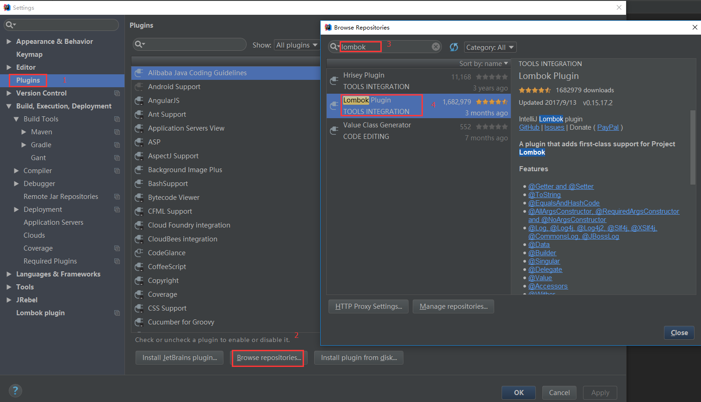
在项目中添加Lombok依赖jar，在pom文件中添加如下部分。(不清楚版本可以在Maven仓库中搜索)
1 | <!-- https://mvnrepository.com/artifact/org.projectlombok/lombok --> |
Lombok有哪些注解
- @Setter
- @Getter
- @Data
- @Log(泛型注解，具体有很多种形式)
- @AllArgsConstructor
- @NoArgsConstructor
- @EqualsAndHashCode
- @NonNull
- @Cleanup
- @ToString
- @RequiredArgsConstructor
- @Value
- @SneakyThrows
- @Synchronized
@Log
有如下可选择可用：
1 | //@CommonsLog |
使用Lombok
1 | import lombok.extern.java.Log; |
不使用Lombok
1 | public class LogExample { |
默认情况下，记录器的主题（或名称）将是使用注释进行@Log注释的类的类名称。这可以通过指定topic参数来定制。例如：@XSlf4j(topic=”reporting”)。该类型注解可以满足不同的日志系统的日志使用，Lombok提供了一些自定义配置项可以参看Log官方介绍
@Getter和@Setter
该注解使用在类或者属性上，该注解可以使用在类上也可以使用在属性上。生成的getter遵循布尔属性的约定。例如：boolean类型的sex，getter方法为isSex而不是getSex
在使用该注解时，会默认生成一个无参构造和对应的getter/setter方法
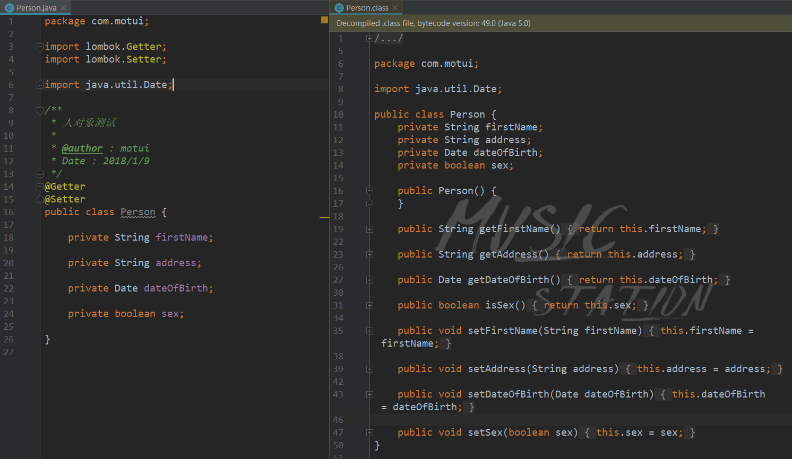
该注解也可以使用在单个属性上，会默认生成一个无参构造
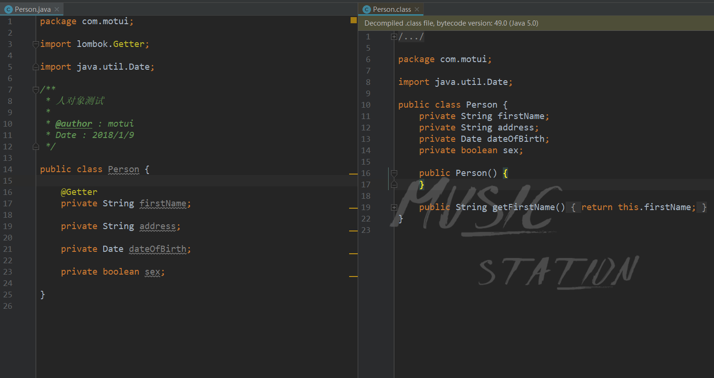
@NonNull
该注解使用在属性上，该注解用于属性的非空检查，当放在setter方法的字段上，将生成一个空检查，如果为空，则抛出NullPointerException。 该注解会默认是生成一个无参构造。
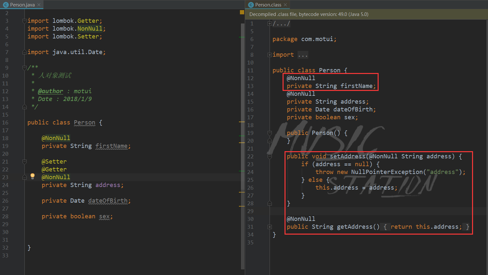
@toString
该注解使用在类上，该注解默认将所有非静态以名称-值的形式输出。
- 如果需要可以通过注释参数includeFieldNames来控制输出中是否包含的属性名称。
- 可以通过exclude参数中包含字段名称，可以从生成的方法中排除特定字段。
- 可以通过callSuper参数控制父类的输出。
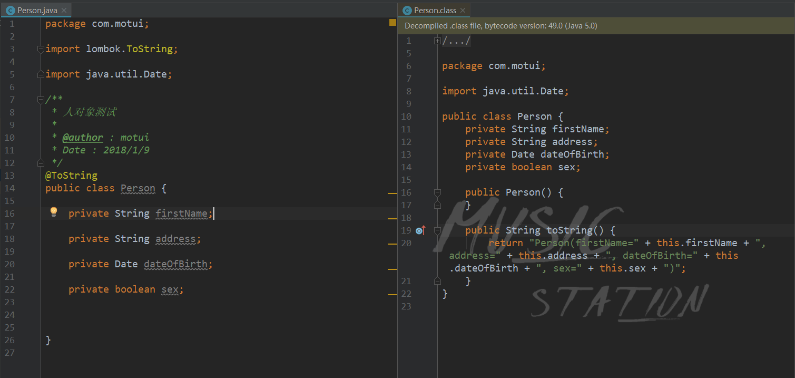
includeFieldNames是否包含属性名称
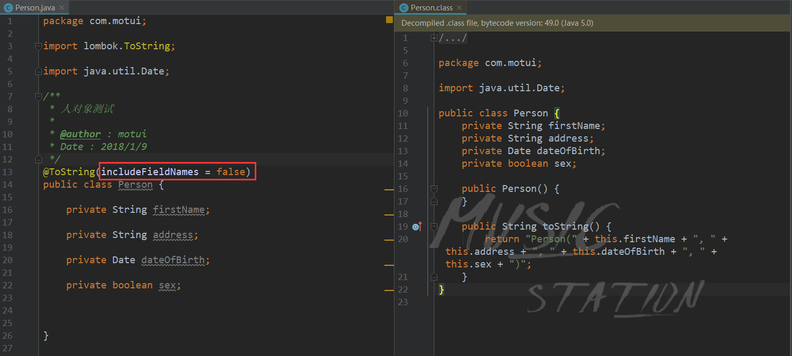
exclude 排除指定字段
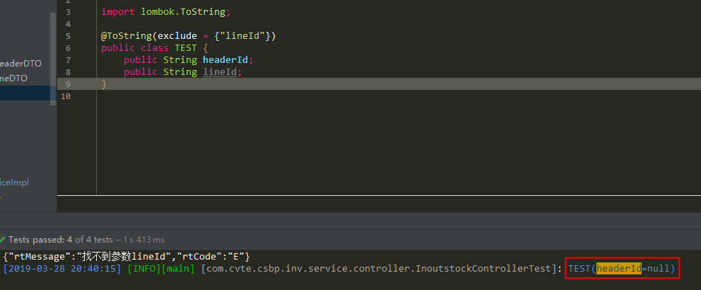
callSuper输出父类属性
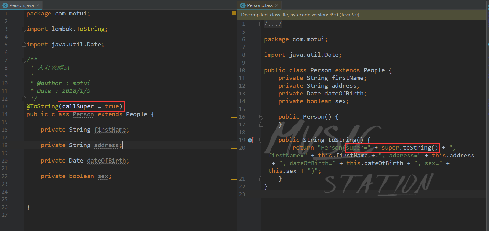
注意：父类也要有toString方法，不然打印的是对象内存地址
1 | //父类无toString方法 |
@EqualsAndHashCode
该注解使用在类上，该注解在类级别注释会同时生成equals和hashCode。
存在继承关系需要设置callSuper参数为true。
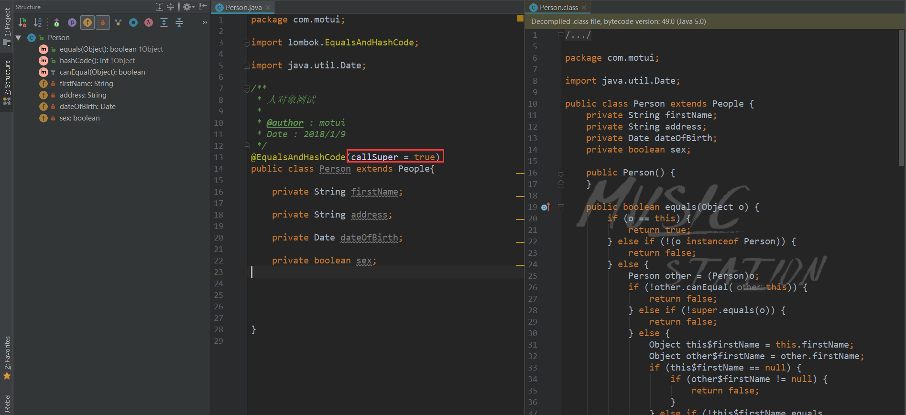
@Data
该注解使用在类上，该注解是最常用的注解，相当于@Getter、@Setter、@RequiredArgsConstructor、@ToString、@EqualsAndHashCode这5个注解的合集
本质上使用@Data注解，类默认@ToString和@EqualsAndHashCode以及每个字段都有@Setter和@getter。该注解也会生成一个公共构造函数，可以将任何@NonNull和final字段作为参数。
虽然@Data注解非常有用，但是它没有与其他注解相同的控制粒度。@Data提供了一个可以生成静态工厂的单一参数，将staticConstructor参数设置为所需要的名称，Lombok自动生成的构造函数设置为私有，并提供公开的给定名称的静态工厂方法。
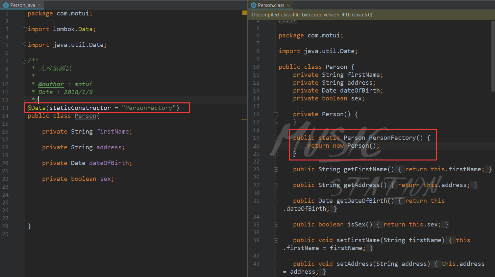
@AllArgsConstructor
该注解使用在类上，该注解提供一个全参数的构造方法，默认不提供无参构造。
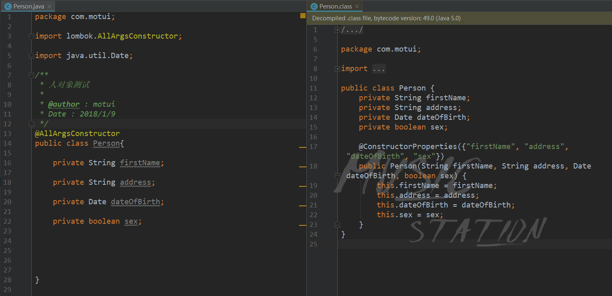
@NoArgsConstructor
该注解使用在类上，该注解提供一个无参构造
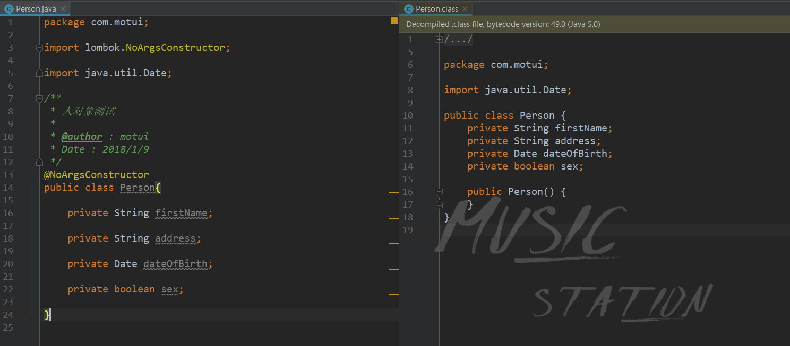
@RequiredArgsConstructor
该注解使用在类上，使用类中所有带有 @NonNull 注解的或者带有 final 修饰的成员变量生成对应的构造方法。
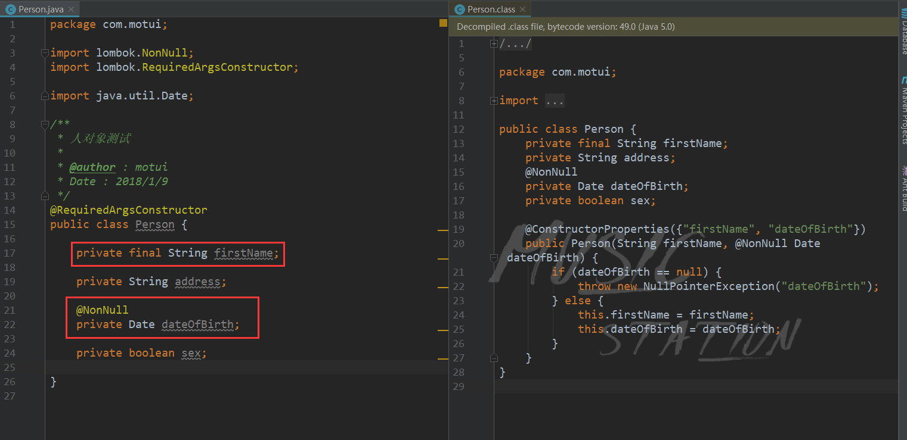
@Value
这个注解用在 类 上，会生成含所有参数的构造方法、get方法，此外还提供了equals、hashCode、toString 方法。
注：没有setter
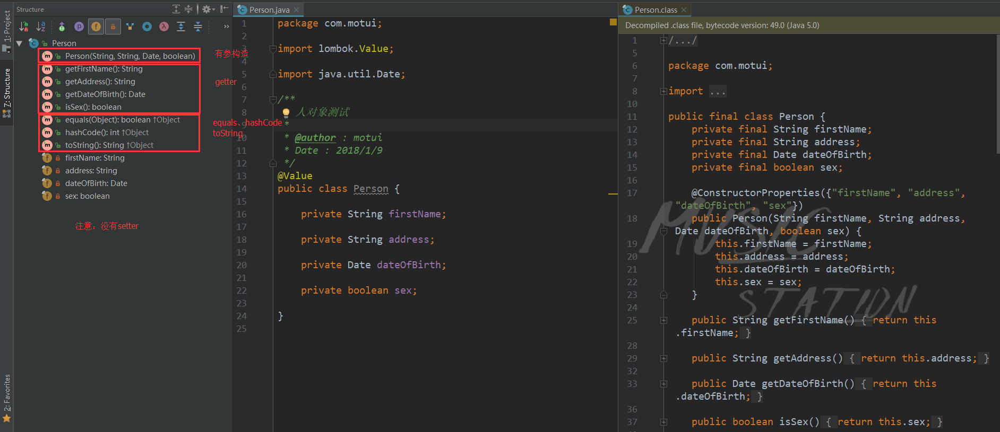
@Cleanup
该注解使用在属性前，该注解是用来保证分配的资源被释放。在本地变量上使用该注解，任何后续代码都将封装在try/finally中，确保当前作用于中的资源被释放。默认@Cleanup清理的方法为close，可以使用value指定不同的方法名称。
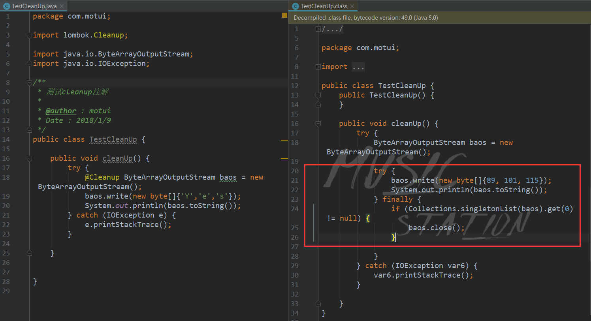
@Synchronized
该注解使用在类或者实例方法上，Synchronized在一个方法上，使用关键字可能会导致结果和想要的结果不同，因为多线程情况下会出现异常情况。Synchronized 关键字将在this示例方法情况下锁定当前对象，或者class讲台方法的对象上多锁定。这可能会导致死锁现象。一般情况下建议锁定一个专门用于此目的的独立锁，而不是允许公共对象进行锁定。该注解也是为了达到该目的。
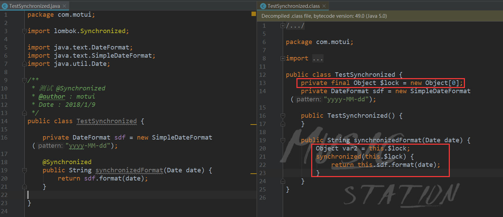
@SneakyThrows
这个注解用在方法上，可以将方法中的代码用 try-catch 语句包裹起来，捕获异常并在 catch 中用 Lombok.sneakyThrow(e) 把异常抛出，可以使用 @SneakyThrows(Exception.class) 的形式指定抛出哪种异常。该注解需要谨慎使用。
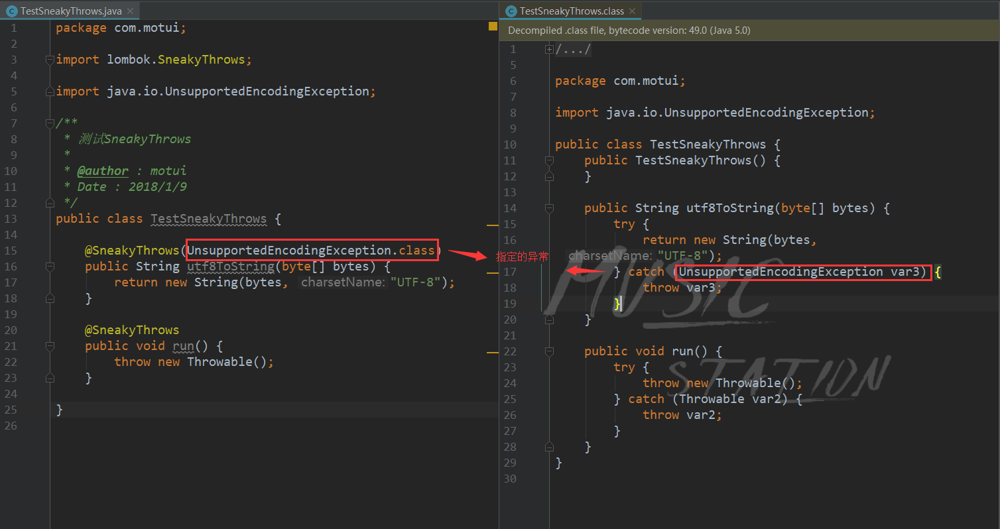